- កំណត់ប្រភេទចតុកោណបានត្រឹមត្រូវ
- បង្ហាញលក្ខណៈនៃប្រលេឡូក្រាមបានច្បាស់លាស់
- បង្ហាញលក្ខណៈនៃចតុកោណកែង ចតុកោណស្មើ និងការេបានច្បាស់លាស់
- បង្ហាញលក្ខណៈចតុកោណព្នាយបានច្បាស់លាស់។
1. ប្រភេទចតុកោណ
ចតុកោណ ជាពហុកោណដែលមានជ្រុង \(\displaystyle 4\)។ ចតុកោណនីមួយៗមានជ្រុង \(\displaystyle 4\) និងមុំ \(\displaystyle 4\) ហើយមានចតុកោណផ្សេងទៀតមានលក្ខណៈបន្ថែមពីលើនេះដូចខាងក្រោម ៖
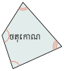
ចតុកោណព្នាយ ជាចតុកោណដែលមានជ្រុងពីរស្របគ្នា។ បើ \(\displaystyle ABCD\) មានអង្កត់ \(\displaystyle AB \parallel DC\) នោះ \(\displaystyle ABCD\) ជាចតុកោណព្នាយ។
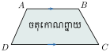
ប្រលេឡូក្រាម ជាចតុកោណដែលមានជ្រុងឈមស្របគ្នាពីរៗ។ បើ \(\displaystyle ABCD\) ជាប្រលេឡូក្រាម គេបាន \(\displaystyle AB \parallel CD\) និង \(\displaystyle AD \parallel BC\)។
ចតុកោណកែង ជាប្រលេឡូក្រាមដែលមានមុំកែងមួយ។ បើ \(\displaystyle ABCD\) ជាប្រលេឡូក្រាម និង \(\displaystyle \angle A = 90^\circ\) នោះ \(\displaystyle ABCD\) ជាចតុកោណកែង។
ចតុកោណស្មើ ជាប្រលេឡូក្រាមដែលមានជ្រុងជាប់គ្នាប៉ុនគ្នា។ បើ \(\displaystyle ABCD\) ជាប្រលេឡូក្រាម និង \(\displaystyle AB = BC\) នោះ \(\displaystyle ABCD\) ជាចតុកោណស្មើ។
ការេ ជាប្រលេឡូក្រាមដែលមានជ្រុងពីរជាប់គ្នាប៉ុនគ្នានិងមានមុំកែងមួយ។ បើ \(\displaystyle ABCD\) ជាប្រលេឡូក្រាម ហើយ \(\displaystyle \angle A = 90^\circ\) និង \(\displaystyle AB = BC\) នោះ \(\displaystyle ABCD\) ជាការេ។
ទំនាក់ទំនងនៃប្រភេទចតុកោណ
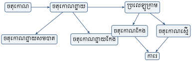
▶ មើលរូបមានចលនា៖ គ្រួសារចតុកោណ
2. លក្ខណៈចតុកោណ
2.1. លក្ខណៈប្រលេឡូក្រាម
ប្រលេឡូក្រាមជាចតុកោណដែលមានជ្រុងឈមស្របគ្នាពីរៗ។ បើ \(\displaystyle ABCD\) ជាប្រលេឡូក្រាម គេបាន \(\displaystyle AB \parallel CD\) និង \(\displaystyle AD \parallel BC\)។
អង្កត់ទ្រូងនីមួយៗ ចែកប្រលេឡូក្រាមជាត្រីកោណពីរប៉ុនគ្នា។
\(\displaystyle ABCD\) ជាប្រលេឡូក្រាមដែល \(\displaystyle AC\) ជាអង្កត់ទ្រូង។ បង្ហាញថា \(\displaystyle \Delta ADC \cong \Delta ABC\)។
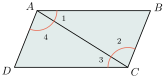
\(\displaystyle \Delta ADC\) និង \(\displaystyle \Delta ABC\) មាន
- \(\displaystyle \angle A_1 = \angle C_3\) (មុំឆ្លាស់ក្នុង)
- \(\displaystyle AC\) (ជ្រុងរួម)
- \(\displaystyle \angle A_4 = \angle C_2\) (មុំឆ្លាស់ក្នុង)។
ដូច្នេះ \(\displaystyle \Delta ADC \cong \Delta ABC\) (ករណី ម-ជ-ម)។
ដូចគ្នានេះដែរចំពោះអង្កត់ទ្រូង \(\displaystyle BD\) គេបាន \(\displaystyle \Delta ADB \cong \Delta DBC\) (ករណី ម-ជ-ម)។
គេបាន \(\displaystyle AD = BC\), \(\displaystyle AB = DC\), \(\displaystyle \angle A = \angle C\), \(\displaystyle \angle D = \angle B\)។
វិបាក ជ្រុងឈមនិងមុំឈមនៃប្រលេឡូក្រាមប៉ុនគ្នា។
មុំតគ្នាជាមុំបន្ថែមគ្នា។
\(\displaystyle ABCD\) ជាប្រលេឡូក្រាមដែល \(\displaystyle \angle A\) និង \(\displaystyle \angle B\) ជាមុំតគ្នា។ បង្ហាញថា \(\displaystyle \angle A + \angle B = 180^\circ\)។
គេមានអង្កត់ \(\displaystyle AD \parallel BC\) កាត់ដោយខ្នាត់ \(\displaystyle AB\)
គេបាន \(\displaystyle \angle A + \angle B = 180^\circ\) (ផលបូកមុំក្នុងរួមខាង)។
អង្កត់ទ្រូងនៃប្រលេឡូក្រាមប្រសព្វគ្នាត្រង់ចំណុចកណ្ដាលរៀងគ្នា \(\displaystyle O\) ហៅថាផ្ចិតឆ្លុះនៃប្រលេឡូក្រាម។
\(\displaystyle ABCD\) ជាប្រលេឡូក្រាមដែលមានអង្កត់ទ្រូង \(\displaystyle AC\) និង \(\displaystyle BD\) ប្រសព្វគ្នាត្រង់ \(\displaystyle O\)។ បង្ហាញថា \(\displaystyle O\) ជាចំណុចកណ្ដាលរៀងគ្នានៃអង្កត់ \(\displaystyle AC\) និង \(\displaystyle BD\)។
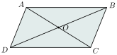
ត្រីកោណ \(\displaystyle AOB\) និង \(\displaystyle \Delta ODC\) មាន
- \(\displaystyle \angle OAB = \angle OCD\) (មុំឆ្លាស់ក្នុង)
- \(\displaystyle AB = DC\) (ជ្រុងឈមប្រលេឡូក្រាម)
- \(\displaystyle \angle OBA = \angle ODC\) (មុំឆ្លាស់ក្នុង)
ដូច្នេះ \(\displaystyle \Delta AOB \cong \Delta ODC\) (ករណី ម-ជ-ម)
គេបាន \(\displaystyle OA = OC\) នាំឱ្យ \(\displaystyle O\) ជាចំណុចកណ្ដាលនៃអង្កត់ \(\displaystyle AC\) និង \(\displaystyle OB = OD\) នាំឱ្យ \(\displaystyle O\) ជាចំណុចកណ្ដាលនៃអង្កត់ \(\displaystyle BD\)។
ដូច្នេះ \(\displaystyle O\) ជាចំណុចកណ្ដាលរៀងគ្នានៃអង្កត់ \(\displaystyle AC\) និង \(\displaystyle BD\)។
បើចតុកោណមួយមានជ្រុងឈមប៉ុនគ្នាពីរៗ នោះចតុកោណជាប្រលេឡូក្រាម។
ចតុកោណ \(\displaystyle ABCD\) មាន \(\displaystyle AB = CD\) និង \(\displaystyle AD = BC\)។ បង្ហាញថា \(\displaystyle ABCD\) ជាប្រលេឡូក្រាម។
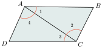
គូសអង្កត់ទ្រូង \(\displaystyle AC\)
ត្រីកោណ \(\displaystyle ADC\) និង \(\displaystyle ABC\) មាន
- \(\displaystyle AB = CD\), \(\displaystyle AD = BC\) (សម្មតិកម្ម)
- \(\displaystyle AC\) ជ្រុងរួម
ដូច្នេះ \(\displaystyle \Delta ADC \cong \Delta ABC\) (ករណី ជ-ជ-ជ)។
វិបាក \(\displaystyle \angle A_1 = \angle C_3\) ជាមុំឆ្លាស់ក្នុង គេបាន \(\displaystyle AB \parallel DC\) (1)
\(\displaystyle \angle A_4 = \angle C_2\) ជាមុំឆ្លាស់ក្នុង គេបាន \(\displaystyle AD \parallel BC\) (2)
តាម (1) និង (2) គេបានចតុកោណ \(\displaystyle ABCD\) ជាប្រលេឡូក្រាម។
បើចតុកោណមួយមានមុំឈមប៉ុនគ្នាពីរៗ នោះចតុកោណជាប្រលេឡូក្រាម។
ចតុកោណ \(\displaystyle ABCD\) មាន \(\displaystyle \angle A = \angle C\) និង \(\displaystyle \angle B = \angle D\)។ បង្ហាញថា \(\displaystyle ABCD\) ជាប្រលេឡូក្រាម។
គេមាន
- \(\displaystyle \angle A + \angle B + \angle C + \angle D = 360^\circ\) (ផលបូកមុំក្នុង)
- \(\displaystyle \angle A = \angle C\) និង \(\displaystyle \angle B = \angle D\) (សម្មតិកម្ម)
គេបាន \(\displaystyle 2\angle A + 2\angle B = 360^\circ\) និង \(\displaystyle \angle B = \angle D\)
\(\displaystyle \angle A + \angle B = 180^\circ\) និង \(\displaystyle \angle A + \angle D = 180^\circ\) (ផលបូកមុំក្នុងរួមខាង)
គេបាន \(\displaystyle AD \parallel BC\) និង \(\displaystyle AB \parallel DC\)
ដូច្នេះចតុកោណ \(\displaystyle ABCD\) ជាប្រលេឡូក្រាម។
បើចតុកោណមួយមានជ្រុងឈមពីរស្របគ្នានិងប៉ុនគ្នា នោះចតុកោណជាប្រលេឡូក្រាម។
ចតុកោណ \(\displaystyle ABCD\) មាន \(\displaystyle AB \parallel DC\) និង \(\displaystyle AB = DC\)។ បង្ហាញថា \(\displaystyle ABCD\) ជាប្រលេឡូក្រាម។
គូសអង្កត់ទ្រូង \(\displaystyle AC\)
ត្រីកោណ \(\displaystyle \Delta ADC\) និង \(\displaystyle \Delta ABC\) មាន
- \(\displaystyle AB = DC\) (សម្មតិកម្ម)
- \(\displaystyle \angle ACD = \angle BAC\) (មុំឆ្លាស់ក្នុង)
- \(\displaystyle AC\) ជ្រុងរួម
នោះ \(\displaystyle \Delta ADC \cong \Delta ABC\) (ជ-ម-ជ)
វិបាក \(\displaystyle \angle DAC = \angle BCA\) ជាមុំឆ្លាស់ក្នុង នោះ \(\displaystyle AD \parallel BC\)
ចតុកោណ \(\displaystyle ABCD\) មាន \(\displaystyle AD \parallel BC\) និង \(\displaystyle AB \parallel DC\)
ដូច្នេះចតុកោណ \(\displaystyle ABCD\) ជាប្រលេឡូក្រាម។
បើចតុកោណមួយមានអង្កត់ទ្រូងប្រសព្វគ្នាត្រង់ចំណុចកណ្ដាលរៀងគ្នា នោះចតុកោណជាប្រលេឡូក្រាម។
\(\displaystyle O\) ជាចំណុចកណ្ដាលរៀងគ្នានៃអង្កត់ទ្រូង \(\displaystyle AC\) និង \(\displaystyle BD\)។ បង្ហាញថា \(\displaystyle ABCD\) ជាប្រលេឡូក្រាម។
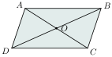
ត្រីកោណ \(\displaystyle AOB\) និង \(\displaystyle \Delta ODC\) មាន
- \(\displaystyle OA = OC\) (\(\displaystyle O\) ជាចំណុចកណ្ដាលនៃ \(\displaystyle AC\))
- \(\displaystyle \angle AOB = \angle COD\) (មុំទល់កំពូល)
- \(\displaystyle OD = OB\) (\(\displaystyle O\) ជាចំណុចកណ្ដាលនៃ \(\displaystyle BD\))
នោះ \(\displaystyle \Delta AOB \cong \Delta ODC\) (ករណី ជ-ម-ជ)
វិបាក \(\displaystyle \angle CAB = \angle ACD\) ជាមុំឆ្លាស់ក្នុង នោះ \(\displaystyle DC \parallel AB\)
ហើយ \(\displaystyle \angle ACB = \angle CAD\) ជាមុំឆ្លាស់ក្នុង នោះ \(\displaystyle AD \parallel BC\)
ចតុកោណ \(\displaystyle ABCD\) មាន \(\displaystyle AD \parallel BC\) និង \(\displaystyle AB \parallel DC\)
ដូច្នេះចតុកោណ \(\displaystyle ABCD\) ជាប្រលេឡូក្រាម។
គេមានចតុកោណ \(\displaystyle ABEF\) និង \(\displaystyle EFDC\) ជាប្រលេឡូក្រាម។ បង្ហាញថា ចតុកោណ \(\displaystyle ABCD\) ជាប្រលេឡូក្រាម។
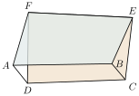
បើ \(\displaystyle ABEF\) ជាប្រលេឡូក្រាមនោះ \(\displaystyle AB = FE\), \(\displaystyle AB \parallel FE\) (1)
បើ \(\displaystyle EFDC\) ជាប្រលេឡូក្រាមនោះ \(\displaystyle FE = DC\), \(\displaystyle FE \parallel DC\) (2)
តាម (1) និង (2) គេបាន \(\displaystyle AB = DC\) និង \(\displaystyle AB \parallel DC\)
ដូច្នេះចតុកោណ \(\displaystyle ABCD\) ជាប្រលេឡូក្រាម។
គេមានត្រីកោណ \(\displaystyle ABC\) មួយ។ \(\displaystyle O\) ជាចំណុចកណ្ដាលនៃ \(\displaystyle BC\) ហើយ \(\displaystyle D\) ជាចំណុចឆ្លុះនៃ \(\displaystyle A\) ធៀបនឹង \(\displaystyle O\)។ រកប្រភេទនៃចតុកោណ \(\displaystyle ABDC\)។
មើលដំណោះស្រាយ
ក្នុងចតុកោណ \(\displaystyle ABDC\) មានអង្កត់ទ្រូងទាំងពីរគឺ \(\displaystyle BC\) និង \(\displaystyle AD\) ៖
- \(\displaystyle O\) ជាចំណុចកណ្ដាលនៃជ្រុង \(\displaystyle BC\) នាំឱ្យ \(\displaystyle OB = OC\) ។
- \(\displaystyle D\) ជាចំណុចឆ្លុះនៃ \(\displaystyle A\) ធៀបនឹង \(\displaystyle O\) នាំឱ្យ \(\displaystyle O\) ជាចំណុចកណ្ដាលនៃ \(\displaystyle AD\) ពោលគឺ \(\displaystyle OA = OD\) ។
ដោយអង្កត់ទ្រូងទាំងពីរ \(\displaystyle BC\) និង \(\displaystyle AD\) កាត់គ្នាត្រង់ចំណុចកណ្ដាល \(\displaystyle O\) រៀងៗខ្លួន តាមលក្ខខណ្ឌសម្គាល់ប្រលេឡូក្រាម ៖
ដូចនេះ ចតុកោណ \(\displaystyle ABDC\) ជា ប្រលេឡូក្រាម ។
2.2. លក្ខណៈចតុកោណកែង
ចតុកោណកែង ជាប្រលេឡូក្រាមដែលមានមុំកែងមួយ។ ដោយសារចតុកោណកែងក៏ជាប្រលេឡូក្រាម នោះគ្រប់លក្ខណៈទាំងអស់របស់ប្រលេឡូក្រាមក៏ជាលក្ខណៈរបស់ចតុកោណកែងដែរ។
- ជ្រុងឈមនិងមុំឈមនៃចតុកោណកែងប៉ុនគ្នា
- មុំទាំងអស់នៃចតុកោណកែងជាមុំកែង។
គេមាន \(\displaystyle ABCD\) ជាប្រលេឡូក្រាមដែលមាន \(\displaystyle \angle A\) ជាមុំកែង។ បង្ហាញថា \(\displaystyle \angle B\), \(\displaystyle \angle C\) និង \(\displaystyle \angle D\) ជាមុំកែង។
បើ \(\displaystyle ABCD\) ជាប្រលេឡូក្រាមនោះ
\(\displaystyle \angle A = \angle C\), \(\displaystyle \angle B = \angle D\) (មុំឈមនៃប្រលេឡូក្រាម)
ហើយ \(\displaystyle \angle A = 90^\circ\) នាំឱ្យ \(\displaystyle \angle C = 90^\circ\) ដោយ \(\displaystyle \angle A + \angle B = 180^\circ\) (មុំជាប់បន្ថែម)
\(\displaystyle 90^\circ + \angle B = 180^\circ\) នាំឱ្យ \(\displaystyle \angle B = 90^\circ\) នោះ \(\displaystyle \angle B = \angle D = 90^\circ\)
ដូច្នេះ \(\displaystyle \angle B = \angle C = \angle D = 90^\circ\)។
អង្កត់ទ្រូងនៃចតុកោណកែងប៉ុនគ្នា។
គេមាន \(\displaystyle ABCD\) ជាចតុកោណកែង។ បង្ហាញថា \(\displaystyle AC = BD\)។
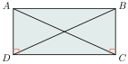
បើ \(\displaystyle ABCD\) ជាចតុកោណកែងនោះ \(\displaystyle AD = BC\) (ជ្រុងឈមនៃចតុកោណកែង)
ក្នុង \(\displaystyle \Delta ADC\) និង \(\displaystyle \Delta BDC\) មាន
\(\displaystyle AD = BC\), \(\displaystyle \angle C = \angle D = 90^\circ\) និង \(\displaystyle DC\) ជ្រុងរួម
នោះ \(\displaystyle \Delta ADC \cong \Delta BDC\) (ករណី ជ-ម-ជ)។
វិបាក \(\displaystyle AC = BD\)
ដូច្នេះ \(\displaystyle AC = BD\)។
ប្រលេឡូក្រាមដែលមានអង្កត់ទ្រូងប៉ុនគ្នាជាចតុកោណកែង។
\(\displaystyle ABCD\) ជាប្រលេឡូក្រាមដែល \(\displaystyle AC = BD\)។ បង្ហាញថា \(\displaystyle ABCD\) ជាចតុកោណកែង។
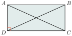
បើ \(\displaystyle ABCD\) ជាប្រលេឡូក្រាមនោះ
\(\displaystyle AD = BC\) (ជ្រុងឈមប្រលេឡូក្រាម)
\(\displaystyle AC = BD\) (សម្មតិកម្ម) និង \(\displaystyle DC\) ជាជ្រុងរួម
គេបាន \(\displaystyle \Delta ADC \cong \Delta BDC\) (ករណី ជ-ជ-ជ)
វិបាក \(\displaystyle AD = BC\), \(\displaystyle \angle ADC = \angle DCB\) ហើយ \(\displaystyle \angle ADC\), \(\displaystyle \angle DCB\) ជាមុំជាប់បន្ថែម
នោះ \(\displaystyle \angle ADC + \angle DCB = 180^\circ\), \(\displaystyle 2\angle DCB = 180^\circ\) នាំឱ្យ \(\displaystyle \angle DCB = 90^\circ\)។
ដូច្នេះ \(\displaystyle ABCD\) ជាចតុកោណកែង។
គេឱ្យត្រីកោណសមបាត \(\displaystyle ABC\) មួយ ដែល \(\displaystyle AB = AC\)។ \(\displaystyle M \in BC\) ហើយ \(\displaystyle P\) និង \(\displaystyle Q\) ជាចំណោលកែងនៃចំណុច \(\displaystyle M\) លើ \(\displaystyle AB\) និង \(\displaystyle AC\)។ បន្លាយ \(\displaystyle QM\) កាត់តាម \(\displaystyle M\) ឱ្យបាន \(\displaystyle MR = MP\)។ តាម \(\displaystyle B\) គូសអង្កត់ \(\displaystyle BH \perp AC\), \(\displaystyle H \in AC\)។ ស្រាយបញ្ជាក់ថា \(\displaystyle BHQR\) ជាចតុកោណកែង ហើយទាញបញ្ជាក់ថា \(\displaystyle MP + MQ = BH\)។
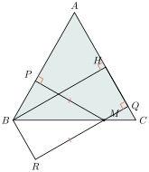
ក្នុងត្រីកោណ \(\displaystyle BMP\) មាន \(\displaystyle \angle PBM + \angle BMP = 90^\circ\)
ក្នុងត្រីកោណ \(\displaystyle MQC\) មាន \(\displaystyle \angle QMC + \angle QCM = 90^\circ\)
ហើយ \(\displaystyle \angle QCM = \angle MBP\) មុំបាតត្រីកោណសមបាត \(\displaystyle ABC\)
\(\displaystyle \angle QMC = \angle PMB\) និង \(\displaystyle \angle QMC = \angle RMB\)
នោះ \(\displaystyle \angle PMB = \angle RMB\)
ត្រីកោណ \(\displaystyle BMP\) និងត្រីកោណ \(\displaystyle BRM\) មាន
- \(\displaystyle MR = MP\) (សម្មតិកម្ម)
- \(\displaystyle \angle PMB = \angle RMB\) ហើយ \(\displaystyle MB\) ជាជ្រុងរួម
នោះ \(\displaystyle \Delta BMP \cong \Delta BRM\) (ករណី ជ-ម-ជ)
វិបាក \(\displaystyle \angle BPM = \angle BRM = 90^\circ\), \(\displaystyle MR = MP\)
ចតុកោណ \(\displaystyle BHQR\) មាន \(\displaystyle \angle BHQ = \angle RQH = \angle QRB = 90^\circ\)
ដូច្នេះចតុកោណ \(\displaystyle BHQR\) ជាចតុកោណកែង។
វិបាក \(\displaystyle RQ = BH\) តែ \(\displaystyle RQ = MR + MQ\)
ដូច្នេះ \(\displaystyle MP + MQ = BH\)។
គេមានចតុកោណកែង \(\displaystyle ABCD\) ដែលមានអង្កត់ទ្រូង \(\displaystyle AC\) និង \(\displaystyle BD\)។ បង្ហាញថា \(\displaystyle \angle CAD = \angle BDA\)។
មើលដំណោះស្រាយ
ដោយ \(\displaystyle ABCD\) ជាចតុកោណកែង នោះជ្រុងឈម \(\displaystyle AB = CD\) និងមុំកែង \(\displaystyle \angle BAD = \angle CDA = 90^\circ\) ។
ក្នុងត្រីកោណកែង \(\displaystyle ADC\) (កែងត្រង់ \(\displaystyle D\)) និងត្រីកោណកែង \(\displaystyle DAB\) (កែងត្រង់ \(\displaystyle A\)) មាន ៖
- \(\displaystyle CD = BA\) (ជ្រុងឈមនៃចតុកោណកែង)
- \(\displaystyle \angle ADC = \angle DAB = 90^\circ\)
- \(\displaystyle AD\) ជាជ្រុងរួម
ដូចនេះ \(\displaystyle \Delta ADC \cong \Delta DAB\) (តាមលក្ខខណ្ឌ ជ.ម.ជ) ។
វិបាក ៖ មុំត្រូវគ្នាប៉ុនគ្នា នាំឱ្យ ៖
(ឬដោយអង្កត់ទ្រូងនៃចតុកោណកែងកាត់គ្នាត្រង់ចំណុចកណ្ដាល \(\displaystyle O\) និងមានប្រវែងស្មើគ្នា \(\displaystyle AC = BD\) នាំឱ្យ \(\displaystyle OA = OD\) ដូចនេះ \(\displaystyle \Delta OAD\) ជាត្រីកោណសមបាតកំពូល \(\displaystyle O\) នាំឱ្យ \(\displaystyle \angle CAD = \angle BDA\)) ។
2.3. លក្ខណៈចតុកោណស្មើ
ចតុកោណស្មើ ជាប្រលេឡូក្រាមដែលមានជ្រុងជាប់គ្នាប៉ុនគ្នា។ ដោយសារចតុកោណស្មើក៏ជាប្រលេឡូក្រាម នោះគ្រប់លក្ខណៈទាំងអស់របស់ប្រលេឡូក្រាមក៏ជាលក្ខណៈរបស់ចតុកោណស្មើដែរ។ លក្ខណៈចតុកោណស្មើមាន
- ជ្រុងឈមស្របគ្នាពីរៗ។
- អង្កត់ទ្រូងនីមួយៗចែកចតុកោណស្មើជាត្រីកោណពីរប៉ុនគ្នា។
- ជ្រុងឈមនិងមុំឈមប៉ុនគ្នា។
- អង្កត់ទ្រូងចតុកោណស្មើប្រសព្វគ្នាត្រង់ចំណុចកណ្ដាលរៀងគ្នា \(\displaystyle O\) ហៅថាផ្ចិតឆ្លុះនៃចតុកោណស្មើ។
- មុំតគ្នាជាមុំបន្ថែមគ្នា។
លើសពីនេះ ចតុកោណស្មើមានលក្ខណៈដូចខាងក្រោម ៖
ជ្រុងទាំង \(\displaystyle 4\) នៃចតុកោណស្មើប៉ុនគ្នា។
គេមាន \(\displaystyle ABCD\) ជាប្រលេឡូក្រាម ដែល \(\displaystyle AB = AD\)។ បង្ហាញថា \(\displaystyle AB = BC = CD = DA\)។
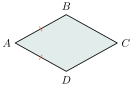
បើ \(\displaystyle ABCD\) ជាប្រលេឡូក្រាម
នោះ \(\displaystyle AB = CD\) និង \(\displaystyle AD = BC\) (ជ្រុងឈមនៃប្រលេឡូក្រាម)
\(\displaystyle AB = AD\) (សម្មតិកម្ម)
ដូច្នេះ \(\displaystyle AB = BC = CD = DA\)។
អង្កត់ទ្រូងនៃចតុកោណស្មើកែងគ្នា។
គេមាន \(\displaystyle ABCD\) ជាចតុកោណស្មើ។ បង្ហាញថា \(\displaystyle AC \perp BD\)។
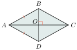
បើ \(\displaystyle ABCD\) ជាចតុកោណស្មើ នោះ
\(\displaystyle \Delta ABO\) និង \(\displaystyle \Delta ADO\) មាន
- \(\displaystyle AB = AD\) និង \(\displaystyle OD = OB\)
- \(\displaystyle AO\) (ជ្រុងរួម)
នាំឱ្យ \(\displaystyle \Delta ABO \cong \Delta ADO\) (ករណី ជ-ជ-ជ)
វិបាក \(\displaystyle \angle AOD = \angle AOB\)
ហើយ \(\displaystyle \angle AOD\), \(\displaystyle \angle AOB\) ជាមុំជាប់បន្ថែម នោះ \(\displaystyle \angle AOD + \angle AOB = 180^\circ\)
\(\displaystyle 2\angle AOB = 180^\circ\), \(\displaystyle \angle AOB = 90^\circ\)
ដូច្នេះ \(\displaystyle AC \perp BD\)។
ប្រលេឡូក្រាមដែលមានអង្កត់ទ្រូងកែងគ្នា ជាចតុកោណស្មើ។
គេមាន \(\displaystyle ABCD\) ជាប្រលេឡូក្រាម ដែល \(\displaystyle AC \perp BD\)។ បង្ហាញថា \(\displaystyle ABCD\) ជាចតុកោណស្មើ។
ក្នុង \(\displaystyle \Delta ABO\) និង \(\displaystyle \Delta ADO\) មាន
- \(\displaystyle OD = OB\) និង \(\displaystyle \angle AOD = \angle AOB\)
- \(\displaystyle AO\) (ជ្រុងរួម)
នាំឱ្យ \(\displaystyle \Delta ABO \cong \Delta ADO\) ករណី (ជ-ម-ជ)
វិបាក \(\displaystyle AB = AD\)
\(\displaystyle ABCD\) ជាប្រលេឡូក្រាមដែលមាន \(\displaystyle AB = AD\) ដូច្នេះ \(\displaystyle ABCD\) ជាចតុកោណស្មើ។
អង្កត់ទ្រូងចតុកោណស្មើ គឺជាកន្លះបន្ទាត់ពុះនៃមុំឈម។
គេមាន \(\displaystyle ABCD\) ជាចតុកោណស្មើដែលមានអង្កត់ទ្រូង \(\displaystyle AC\) និង \(\displaystyle BD\)។ បង្ហាញថា \(\displaystyle AC\) ជាកន្លះបន្ទាត់ពុះ \(\displaystyle \angle BAD\) និង \(\displaystyle \angle BCD\) ហើយ \(\displaystyle BD\) ជាកន្លះបន្ទាត់ពុះ \(\displaystyle \angle ADC\) និង \(\displaystyle \angle ABC\)។
ក្នុង \(\displaystyle \Delta ABO\) និង \(\displaystyle \Delta ADO\) មាន
- \(\displaystyle OD = OB\) និង \(\displaystyle \angle AOD = \angle AOB\)
- \(\displaystyle AO\) (ជ្រុងរួម)
នាំឱ្យ \(\displaystyle \Delta ABO \cong \Delta ADO\) ករណី (ជ-ម-ជ)
វិបាក \(\displaystyle \angle BAO = \angle DAO\)
ដូច្នេះ \(\displaystyle AC\) ជាកន្លះបន្ទាត់ពុះមុំ \(\displaystyle \angle BAD\)។
សម្រាយបញ្ជាក់ដូចគ្នា គេបាន
\(\displaystyle AC\) ជាកន្លះបន្ទាត់ពុះមុំ \(\displaystyle \angle BCD\)
\(\displaystyle BD\) ជាកន្លះបន្ទាត់ពុះមុំ \(\displaystyle \angle ADC\) និង \(\displaystyle \angle ABC\)។
គេឱ្យចតុកោណកែង \(\displaystyle ABCD\) មាន \(\displaystyle O\) ជាចំណុចប្រសព្វនៃអង្កត់ទ្រូង។ \(\displaystyle I\) ជាចំណុចមួយដែល \(\displaystyle AOBI\) ជាប្រលេឡូក្រាម។ បង្ហាញថា \(\displaystyle AOBI\) ជាចតុកោណស្មើ។
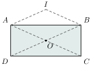
បើ \(\displaystyle AOBI\) ជាប្រលេឡូក្រាម គេបាន \(\displaystyle AI = OB\), \(\displaystyle IB = AO\) (1)
\(\displaystyle ABCD\) ជាចតុកោណកែង គេបាន \(\displaystyle AO = DO = OB = OC\) (2)
តាម (1) និង (2) គេបាន \(\displaystyle AO = AI\)
ដូច្នេះ \(\displaystyle AOBI\) ជាប្រលេឡូក្រាមដែលមានជ្រុងជាប់ \(\displaystyle AO = AI\) ជាចតុកោណស្មើ។
គណនារង្វាស់មុំ \(\displaystyle \angle DAB\) និង \(\displaystyle \angle BDC\) នៃចតុកោណស្មើ \(\displaystyle ABCD\)។
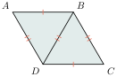
មើលដំណោះស្រាយ
ក្នុងចតុកោណស្មើ \(\displaystyle ABCD\) ជ្រុងទាំងបួនមានប្រវែងស្មើគ្នា \(\displaystyle AB = BC = CD = DA\) ។
តាមសញ្ញាសម្គាល់លើរូបភាព អង្កត់ទ្រូង \(\displaystyle BD\) មានប្រវែងស្មើនឹងជ្រុងនៃចតុកោណស្មើ ៖
ក្នុង \(\displaystyle \Delta ABD\) មានជ្រុងទាំងបីស្មើគ្នា (\(\displaystyle AB = AD = BD\)) នាំឱ្យ \(\displaystyle \Delta ABD\) ជាត្រីកោណសម័ង្ស ។
ដូច្នេះ គ្រប់មុំក្នុងនៃ \(\displaystyle \Delta ABD\) ស្មើនឹង \(\displaystyle 60^\circ\) នាំឱ្យ ៖
\[\angle DAB = 60^\circ \text{ ។}\]ក្នុង \(\displaystyle \Delta BCD\) មានជ្រុងទាំងបីស្មើគ្នា (\(\displaystyle BC = CD = BD\)) នាំឱ្យ \(\displaystyle \Delta BCD\) ជាត្រីកោណសម័ង្ស ។
ដូច្នេះ គ្រប់មុំក្នុងនៃ \(\displaystyle \Delta BCD\) ស្មើនឹង \(\displaystyle 60^\circ\) នាំឱ្យ ៖
\[\angle BDC = 60^\circ \text{ ។}\]
ដូចនេះ \(\displaystyle \angle DAB = 60^\circ\) និង \(\displaystyle \angle BDC = 60^\circ\) ។
2.4. លក្ខណៈការេនិងទ្រឹស្ដីបទចំណុចកណ្ដាល
ការេ ជាចតុកោណស្មើដែលមានមុំកែងមួយ។ ដោយចតុកោណស្មើជាប្រលេឡូក្រាមនោះ ការេក៏ជាប្រលេឡូក្រាម។
ការេ ជាចតុកោណកែងដែលមានជ្រុងជាប់ស្មើគ្នា។ ដោយចតុកោណកែងជាប្រលេឡូក្រាម នោះការេក៏ជាប្រលេឡូក្រាម។
ការេមានលក្ខណៈទាំងអស់នៃចតុកោណស្មើនិងចតុកោណកែង ៖
- ជ្រុងទាំងបួនប៉ុនគ្នា។
- មុំទាំងបួនជាមុំកែង។
- ជ្រុងឈមស្របគ្នា និងស្មើគ្នា។
- មេដ្យាទ័រនៃជ្រុងឈមជាអ័ក្សឆ្លុះហើយកែងគ្នា និងប្រសព្វគ្នាត្រង់ចំណុចកណ្ដាលរៀង។
- អង្កត់ទ្រូងប៉ុនគ្នា ហើយកែងគ្នាត្រង់ចំណុចកណ្ដាលរៀង។
- មេដ្យាទ័រនៃជ្រុងឈមជាអ័ក្សឆ្លុះ។
- អង្កត់ទ្រូងជាកន្លះបន្ទាត់ពុះនៃមុំឈមហើយជាអ័ក្សឆ្លុះ។
ក្នុងត្រីកោណ អង្កត់ដែលភ្ជាប់ចំណុចកណ្ដាលនៃជ្រុងពីរត្រូវស្របនឹងជ្រុងទី \(\displaystyle 3\) ហើយស្មើនឹងពាក់កណ្ដាលជ្រុងទី \(\displaystyle 3\)។ អង្កត់នេះហៅថា បាតមធ្យមនៃត្រីកោណ។
គេមាន \(\displaystyle \Delta ABC\) មានចំណុច \(\displaystyle D\) កណ្ដាល \(\displaystyle AB\) និងចំណុច \(\displaystyle E\) កណ្ដាល \(\displaystyle AC\)។ បង្ហាញថា \(\displaystyle DE \parallel BC\) និង \(\displaystyle DE = \frac{1}{2}BC\)។
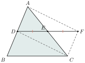
▶ មើលរូបមានចលនា៖ ទ្រឹស្ដីបទអង្កត់មធ្យមត្រីកោណ
បន្លាយជ្រុង \(\displaystyle DE\) ឱ្យបាន \(\displaystyle DE = EF\) រួចភ្ជាប់ \(\displaystyle FC\), \(\displaystyle AF\) និង \(\displaystyle DC\) បានចតុកោណ \(\displaystyle ADCF\)។
ចតុកោណ \(\displaystyle ADCF\) មានអង្កត់ទ្រូង \(\displaystyle AC\) និង \(\displaystyle DF\) ប្រសព្វគ្នាត្រង់ចំណុចកណ្ដាល \(\displaystyle E\) គឺជាប្រលេឡូក្រាម។
ដោយ \(\displaystyle ADCF\) ជាប្រលេឡូក្រាម នោះ \(\displaystyle AD = CF\) និង \(\displaystyle AB \parallel CF\) ហើយ \(\displaystyle AD = DB\) នាំឱ្យ \(\displaystyle DB = CF\)។
ចតុកោណ \(\displaystyle BDFC\) មាន \(\displaystyle DB = CF\) និង \(\displaystyle DB \parallel CF\) ជាប្រលេឡូក្រាម
\(\displaystyle DF = BC\) និង \(\displaystyle DE \parallel BC\) ហើយ \(\displaystyle DE + EF = DF\) តែ \(\displaystyle DE = EF\) (សម្មតិកម្ម)
\(\displaystyle 2DE = DF\) នាំឱ្យ \(\displaystyle DE = \frac{1}{2}DF = \frac{1}{2}BC\)
ដូច្នេះ \(\displaystyle DE = \frac{1}{2}BC\)។
បន្ទាត់ដែលស្របនឹងជ្រុងមួយនៃត្រីកោណ ហើយកាត់តាមចំណុចកណ្ដាលនៃជ្រុងមួយទៀតត្រូវកាត់តាមចំណុចកណ្ដាលនៃជ្រុងទី \(\displaystyle 3\)។
គេមាន \(\displaystyle \Delta ABC\) មានចំណុច \(\displaystyle D\) កណ្ដាល \(\displaystyle AB\) និងបន្ទាត់ \(\displaystyle d\) កាត់តាមចំណុច \(\displaystyle D\) ដែល \(\displaystyle d \parallel BC\) ហើយកាត់ \(\displaystyle AC\) ត្រង់ \(\displaystyle E\)។ បង្ហាញថា \(\displaystyle E\) ជាចំណុចកណ្ដាលនៃ \(\displaystyle AC\)។
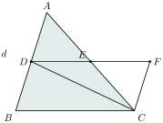
តាមចំណុច \(\displaystyle C\) គូស \(\displaystyle CF \parallel AB\) ដូច្នេះគេបានចតុកោណ \(\displaystyle BDFC\) មាន \(\displaystyle AB \parallel CF\) និង \(\displaystyle DF \parallel BC\) ជាប្រលេឡូក្រាម។
វិបាក \(\displaystyle BD = CF\)
\(\displaystyle DA = DB\) (ចំណុច \(\displaystyle D\) កណ្ដាល \(\displaystyle AB\)) នោះ \(\displaystyle DA = CF\)
ចតុកោណ \(\displaystyle DAFC\) មាន \(\displaystyle DA = CF\) និង \(\displaystyle DA \parallel CF\) ជាប្រលេឡូក្រាម
គេបាន អង្កត់ទ្រូង \(\displaystyle DF\) និង \(\displaystyle AC\) ប្រសព្វគ្នាត្រង់ចំណុចកណ្ដាល \(\displaystyle E\)
ដូច្នេះ \(\displaystyle E\) ជាចំណុចកណ្ដាលនៃ \(\displaystyle AC\)។
ក្នុងត្រីកោណកែង មេដ្យានចំពោះអ៊ីប៉ូតេនុសស្មើនឹងកន្លះអ៊ីប៉ូតេនុស។
គេមាន \(\displaystyle \Delta ABC\) កែងត្រង់ \(\displaystyle B\) ហើយ \(\displaystyle BO\) ជាមេដ្យានត្រូវនឹងអ៊ីប៉ូតេនុស \(\displaystyle AC\)។ បង្ហាញថា \(\displaystyle BO = \frac{1}{2}AC\)។
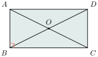
បន្លាយមេដ្យាន \(\displaystyle BO\) ឱ្យបាន \(\displaystyle BO = OD\)។ គេបាន
ចតុកោណ \(\displaystyle ABCD\) ដែលមានអង្កត់ទ្រូងប្រសព្វគ្នាត្រង់ចំណុចកណ្ដាល \(\displaystyle O\) ជាប្រលេឡូក្រាម។
ប្រលេឡូក្រាម \(\displaystyle ABCD\) ដែលមាន \(\displaystyle \angle ABC = 90^\circ\) ជាចតុកោណកែង។
វិបាក \(\displaystyle BD = AC\) នាំឱ្យ \(\displaystyle BO = \frac{1}{2}AC\)។
ក្នុងត្រីកោណមួយ បើមេដ្យានស្មើនឹងកន្លះជ្រុងត្រូវនឹងវា ត្រីកោណនោះគឺជាត្រីកោណកែងដែលមានជ្រុងត្រូវនឹងមេដ្យានជាអ៊ីប៉ូតេនុស។
គេមាន \(\displaystyle \Delta ABC\) មានមេដ្យាន \(\displaystyle BO = \frac{1}{2}AC\)។ បង្ហាញថា \(\displaystyle \Delta ABC\) កែងត្រង់ \(\displaystyle B\)។
បន្លាយមេដ្យាន \(\displaystyle BO\) ឱ្យបាន \(\displaystyle BO = OD\)។ គេបាន
ចតុកោណ \(\displaystyle ABCD\) ដែលមានអង្កត់ទ្រូងប្រសព្វគ្នាត្រង់ចំណុចកណ្ដាល \(\displaystyle O\) ជាប្រលេឡូក្រាម។
ដោយ \(\displaystyle BO = \frac{1}{2}AC\) នោះ \(\displaystyle BO + OD = BD\)
\(\displaystyle \frac{1}{2}AC + \frac{1}{2}AC = BD\) ឬ \(\displaystyle AC = BD\)
ប្រលេឡូក្រាម \(\displaystyle ABCD\) ដែលមានអង្កត់ទ្រូង \(\displaystyle AC = BD\) ជាចតុកោណកែង
ដូច្នេះ \(\displaystyle \Delta ABC\) កែងត្រង់ \(\displaystyle B\)។
2.5. លក្ខណៈចតុកោណព្នាយ
ចតុកោណព្នាយ ជាចតុកោណដែលមានជ្រុងពីរស្របគ្នា។ ជ្រុងស្របគ្នានេះហៅថា បាត ហើយជ្រុងពីរទៀតមិនស្របគ្នាហៅថា ជ្រុងទ្រេត។ ចតុកោណព្នាយដែលមានជ្រុងទ្រេតពីរស្មើគ្នាគេហៅចតុកោណព្នាយសមបាត (រូបទី ១) ហើយគូនៃមុំស្ថិតនៅសងខាងនៃជ្រុងបាតតែមួយ គេហៅថាមុំបាតនៃចតុកោណព្នាយសមបាត។ ចតុកោណព្នាយដែលមានមុំកែងមួយហៅថា ចតុកោណព្នាយកែង (រូបទី ២)។
អង្កត់ \(\displaystyle AB\) និង \(\displaystyle DC\) ហៅថា បាត។
អង្កត់ \(\displaystyle AD\) និង \(\displaystyle CB\) ហៅថា ជ្រុងទ្រេត។
គូមុំ \(\displaystyle \angle A\) និង \(\displaystyle \angle B\) ហើយ \(\displaystyle \angle D\) និង \(\displaystyle \angle C\) ហៅថា មុំបាត។
មុំបាតនៃចតុកោណព្នាយសមបាតជាមុំប៉ុនគ្នា។
គេមានចតុកោណព្នាយសមបាត \(\displaystyle ABCD\) ដែល \(\displaystyle AB \parallel DC\)។ បង្ហាញថា \(\displaystyle \angle A = \angle B\)។
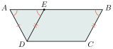
តាមចំណុច \(\displaystyle D\) គូស \(\displaystyle DE \parallel BC\) ហើយ \(\displaystyle AB \parallel DC\) គេបាន \(\displaystyle EBCD\) ជាប្រលេឡូក្រាម។
គេមាន \(\displaystyle DE = CB\) ហើយ \(\displaystyle DA = CB\) (ជ្រុងចតុកោណព្នាយសមបាត) នាំឱ្យ \(\displaystyle DA = DE\)
ដូច្នេះ \(\displaystyle \Delta ADE\) ជាត្រីកោណសមបាត។
វិបាក \(\displaystyle \angle A = \angle E\) ហើយ \(\displaystyle \angle E = \angle B\) (មុំត្រូវគ្នា)។
ដូច្នេះ \(\displaystyle \angle A = \angle B\)។
អង្កត់ទ្រូងនៃចតុកោណព្នាយសមបាតប៉ុនគ្នា។
គេមានចតុកោណព្នាយសមបាត \(\displaystyle ABCD\) ដែល \(\displaystyle AB \parallel DC\)។ បង្ហាញថា \(\displaystyle AC = DB\)។
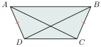
\(\displaystyle \Delta ADC\) និង \(\displaystyle \Delta DBC\)
- មាន \(\displaystyle DA = CB\) (ជ្រុងចតុកោណព្នាយសមបាត)
- មុំ \(\displaystyle \angle D = \angle C\) (មុំបាតចតុកោណព្នាយសមបាត)
- ជ្រុង \(\displaystyle DC\) ជាជ្រុងរួម
នោះ \(\displaystyle \Delta ADC \cong \Delta DBC\)។
វិបាក \(\displaystyle AC = DB\)។
ដូច្នេះ \(\displaystyle AC = DB\)។
បាតមធ្យមនៃចតុកោណព្នាយស្របទៅនឹងបាត និងមានរង្វាស់ស្មើពាក់កណ្ដាលផលបូកបាតទាំងពីរ។
គេមាន \(\displaystyle ABCD\) ជាចតុកោណព្នាយដែលមានបាត \(\displaystyle DC \parallel AB\) ហើយ \(\displaystyle EF\) ជាអង្កត់ដែលភ្ជាប់ចំណុចកណ្ដាលនៃជ្រុងទាំងពីរហៅថា បាតមធ្យម នៃចតុកោណព្នាយ។ បង្ហាញថា \(\displaystyle DC \parallel EF \parallel AB\) និង \(\displaystyle EF = \frac{1}{2}(AB + DC)\)។
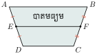
តាមចំណុច \(\displaystyle C\) គូសបន្ទាត់ \(\displaystyle CE\) កាត់បន្លាយជ្រុង \(\displaystyle AB\) ត្រង់ \(\displaystyle G\)។ ត្រីកោណ \(\displaystyle AGE\) និង \(\displaystyle EDC\) មាន
- \(\displaystyle \angle GAE = \angle CDE\) (មុំឆ្លាស់ក្នុង)
- \(\displaystyle AE = ED\) (\(\displaystyle E\) ជាចំណុចកណ្ដាលនៃជ្រុង \(\displaystyle AD\))
- \(\displaystyle \angle AEG = \angle DEC\) (មុំទល់កំពូល)។
ដូច្នេះ \(\displaystyle \Delta AGE \cong \Delta EDC\)។
វិបាក \(\displaystyle AG = DC\) និង \(\displaystyle GE = EC\)។
ក្នុងត្រីកោណ \(\displaystyle CGB\) មាន \(\displaystyle E\) ជាចំណុចកណ្ដាលនៃ \(\displaystyle GC\) និង \(\displaystyle F\) ជាចំណុចកណ្ដាលនៃ \(\displaystyle BC\) នោះ \(\displaystyle EF\) ជាបាតមធ្យមនៃត្រីកោណ \(\displaystyle CGB\)។
គេបាន \(\displaystyle DC \parallel EF \parallel AB\) និង \(\displaystyle EF = \frac{1}{2}GB = \frac{1}{2}(GA + AB) = \frac{1}{2}(DC + AB)\)។
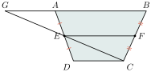
ក្នុងចតុកោណព្នាយចំណុចកណ្ដាលនៃជ្រុងទ្រេតនិងចំណុចកណ្ដាលនៃអង្កត់ទ្រូងឋិតនៅលើបន្ទាត់តែមួយដែលស្របទៅនឹងបាត។
គេមាន \(\displaystyle ABCD\) ជាចតុកោណព្នាយដែលមាន \(\displaystyle E\), \(\displaystyle F\) និង \(\displaystyle G\), \(\displaystyle H\) ជាចំណុចកណ្ដាលរៀងគ្នានៃជ្រុងទ្រេត \(\displaystyle AD\), \(\displaystyle BC\) និងអង្កត់ទ្រូង \(\displaystyle AC\), \(\displaystyle BD\)។ បង្ហាញថា \(\displaystyle E\), \(\displaystyle F\) និង \(\displaystyle G\), \(\displaystyle H\) ឋិតនៅលើបន្ទាត់តែមួយ។
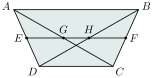
ក្នុងត្រីកោណ \(\displaystyle ADC\) មាន \(\displaystyle E\) ជាចំណុចកណ្ដាលនៃ \(\displaystyle AD\) និង \(\displaystyle G\) ជាចំណុចកណ្ដាលនៃ \(\displaystyle AC\) នោះ \(\displaystyle EG\) ជាបាតមធ្យមនៃត្រីកោណ \(\displaystyle ADC\)។
គេបាន \(\displaystyle DC \parallel EG\) (1)
ដូចគ្នានេះដែរក្នុងត្រីកោណ \(\displaystyle BDC\) មាន \(\displaystyle HF\) ជាបាតមធ្យមនៃត្រីកោណ \(\displaystyle BDC\)
គេបាន \(\displaystyle DC \parallel HF\) (2)
ម្យ៉ាងទៀត \(\displaystyle EF\) ជាបាតមធ្យមនៃចតុកោណព្នាយ \(\displaystyle ABCD\) នោះ \(\displaystyle DC \parallel EF\) (3)
តាម (1), (2) និង (3) គេបាន \(\displaystyle EG\) និង \(\displaystyle HF\) នៅលើទិសតែមួយមានន័យថា \(\displaystyle E\), \(\displaystyle F\) និង \(\displaystyle G\), \(\displaystyle H\) ឋិតនៅលើបន្ទាត់តែមួយ
ដូច្នេះចំណុច \(\displaystyle E\), \(\displaystyle F\) និង \(\displaystyle G\), \(\displaystyle H\) ឋិតនៅលើបន្ទាត់តែមួយ។
គេមានចតុកោណព្នាយសមបាត \(\displaystyle ABCD\) ហើយ \(\displaystyle G\) ជាចំណុចកណ្ដាលនៃ \(\displaystyle AB\)។ \(\displaystyle O\) ជាចំណុចប្រសព្វនៃជ្រុងទ្រេត \(\displaystyle AD\) និង \(\displaystyle BC\) ហើយ \(\displaystyle H\) ជាចំណុចប្រសព្វនៃអង្កត់ទ្រូង \(\displaystyle AC\) និង \(\displaystyle BD\)។ បង្ហាញថា ចំណុច \(\displaystyle O\), \(\displaystyle H\) និង \(\displaystyle G\) ឋិតនៅលើបន្ទាត់តែមួយ។
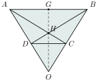
ត្រីកោណ \(\displaystyle OAB\) សមបាត (មុំបាត \(\displaystyle \angle A = \angle B\))
គេបាន មេដ្យាន \(\displaystyle OG\) ជាមេដ្យាទ័រនៃ \(\displaystyle AB\) (1)
ក្នុង \(\displaystyle \Delta ADC\), \(\displaystyle \Delta BDC\) មាន \(\displaystyle AC = BD\) អង្កត់ទ្រូងចតុកោណព្នាយសមបាត។
\(\displaystyle CD\) (ជ្រុងរួម)
\(\displaystyle AD = BC\) ជ្រុងនៃចតុកោណព្នាយសមបាត។
ដូច្នេះ \(\displaystyle \Delta ADC \cong \Delta BDC\)។
គេបាន \(\displaystyle \angle DAC = \angle DBC\), \(\displaystyle \angle DAB = \angle ABC\)
គេបាន \(\displaystyle \angle DAB - \angle DAC = \angle ABC - \angle DBC\) នាំឱ្យ \(\displaystyle \angle CAB = \angle DBA\)
\(\displaystyle \Delta HAB\) ជាត្រីកោណសមបាតនោះមេដ្យាន \(\displaystyle HG\) ជាមេដ្យាទ័រនៃ \(\displaystyle AB\) (2)។
តាម (1) និង (2) គេបាន \(\displaystyle OG\) និង \(\displaystyle HG\) ជាមេដ្យាទ័រនៃ \(\displaystyle AB\)។
ដូច្នេះចំណុច \(\displaystyle O\), \(\displaystyle H\) និង \(\displaystyle G\) ឋិតនៅលើបន្ទាត់តែមួយ។
លំហាត់
ពិនិត្យមើលរូបចតុកោណស្មើខាងស្ដាំ។
- ក. ប្រាប់ឈ្មោះត្រីកោណ \(\displaystyle ABC\)។ ហេតុអ្វី?
- ខ. ប្រាប់ឈ្មោះត្រីកោណ \(\displaystyle ADO\)។ ហេតុអ្វី?
- គ. តើ \(\displaystyle \Delta ABO \cong \Delta ADO\) ឬទេ? ហេតុអ្វី?
មើលដំណោះស្រាយ
ក. ប្រាប់ឈ្មោះត្រីកោណ \(\displaystyle ABC\) ៖
\(\displaystyle \Delta ABC\) ជា ត្រីកោណសមបាតកំពូល \(\displaystyle B\) ។
មូលហេតុ ៖ ក្នុងចតុកោណស្មើ \(\displaystyle ABCD\) ជ្រុងទាំងបួនមានប្រវែងស្មើគ្នា នាំឱ្យ \(\displaystyle BA = BC\) ។ ត្រីកោណដែលមានជ្រុងពីរស្មើគ្នាជាត្រីកោណសមបាត ។
ខ. ប្រាប់ឈ្មោះត្រីកោណ \(\displaystyle ADO\) ៖
\(\displaystyle \Delta ADO\) ជា ត្រីកោណកែងត្រង់ \(\displaystyle O\) ។
មូលហេតុ ៖ តាមលក្ខណៈនៃចតុកោណស្មើ អង្កត់ទ្រូងទាំងពីរកែងគ្នាត្រង់ចំណុចប្រសព្វ \(\displaystyle O\) (\(\displaystyle AC \perp BD\) ត្រង់ \(\displaystyle O\)) នាំឱ្យ \(\displaystyle \angle AOD = 90^\circ\) ។
គ. តើ \(\displaystyle \Delta ABO \cong \Delta ADO\) ឬទេ? ហេតុអ្វី? ៖
បាទ/ចាស \(\displaystyle \Delta ABO \cong \Delta ADO\) ។
មូលហេតុ ៖ ក្នុងត្រីកោណកែងទាំងពីរ \(\displaystyle ABO\) និង \(\displaystyle ADO\) មាន ៖
- អ៊ីប៉ូតេនុស \(\displaystyle AB = AD\) (ជ្រុងនៃចតុកោណស្មើ)
- ជ្រុងមុំកែង \(\displaystyle AO\) ជាជ្រុងរួម
ដូចនេះ \(\displaystyle \Delta ABO \cong \Delta ADO\) (តាមលក្ខខណ្ឌ អ.ជ នៃត្រីកោណកែង ឬ ជ.ជ.ជ ដោយ \(\displaystyle OB = OD\)) ។
ក្នុងប្រលេឡូក្រាម \(\displaystyle ABCD\), \(\displaystyle I\) ជាចំណុចកណ្ដាលនៃ \(\displaystyle AC\) ហើយ \(\displaystyle EF\) ជាអង្កត់មួយដែលកាត់តាម \(\displaystyle I\)។ បង្ហាញថា \(\displaystyle IE = IF\)។
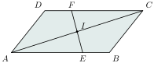
មើលដំណោះស្រាយ
ដោយ \(\displaystyle ABCD\) ជាប្រលេឡូក្រាម នោះជ្រុងឈមស្របគ្នា \(\displaystyle AB \parallel CD\) នាំឱ្យ \(\displaystyle AE \parallel CF\) ។
កាត់ដោយខ្នាត់ \(\displaystyle AC\) គេបានមុំឆ្លាស់ក្នុងស្មើគ្នា ៖
\[\angle IAE = \angle ICF\]ក្នុងត្រីកោណ \(\displaystyle AIE\) និង \(\displaystyle CIF\) មាន ៖
- \(\displaystyle \angle IAE = \angle ICF\) (មុំឆ្លាស់ក្នុង)
- \(\displaystyle IA = IC\) (\(\displaystyle I\) ជាចំណុចកណ្ដាលនៃ \(\displaystyle AC\))
- \(\displaystyle \angle AIE = \angle CIF\) (មុំទល់កំពូល)
ដូចនេះ \(\displaystyle \Delta AIE \cong \Delta CIF\) (តាមលក្ខខណ្ឌ ម.ជ.ម) ។
វិបាក ៖ ជ្រុងត្រូវគ្នាប៉ុនគ្នា នាំឱ្យ ៖
\[IE = IF \text{ ។}\]ដោយប្រើចតុកោណ \(\displaystyle EFGH\)
- ក. គេឱ្យ \(\displaystyle EH = IF\) និង \(\displaystyle \angle EHI = \angle FIG\)។ បង្ហាញថាចតុកោណ \(\displaystyle EFIH\) ជាប្រលេឡូក្រាម។
- ខ. គេឱ្យ \(\displaystyle EH \parallel FI\), \(\displaystyle EH = IF\) និង \(\displaystyle FG = IF\)។ បង្ហាញថាចតុកោណ \(\displaystyle EFIH\) ជាប្រលេឡូក្រាម។
មើលដំណោះស្រាយ
ក. បង្ហាញថាចតុកោណ \(\displaystyle EFIH\) ជាប្រលេឡូក្រាម ៖
ដោយចំណុច \(\displaystyle H, I, G\) ឋិតនៅលើបន្ទាត់តែមួយ នោះមុំ \(\displaystyle \angle EHI\) និង \(\displaystyle \angle FIG\) ជាមុំស្របគ្នាក្នុងការកាត់រវាងបន្ទាត់ \(\displaystyle EH\) និង \(\displaystyle FI\) ដោយបន្ទាត់ \(\displaystyle HG\) ។
ដោយ \(\displaystyle \angle EHI = \angle FIG\) នោះបន្ទាត់ទាំងពីរស្របគ្នា ៖
\[EH \parallel FI\]ក្នុងចតុកោណ \(\displaystyle EFIH\) មានជ្រុងឈមមួយគូគឺ \(\displaystyle EH\) និង \(\displaystyle FI\) ដែល ៖
\[EH \parallel FI \quad \text{និង} \quad EH = IF\]តាមលក្ខខណ្ឌសម្គាល់ប្រលេឡូក្រាម ចតុកោណដែលមានជ្រុងឈមមួយគូស្របគ្នាផងនិងស្មើគ្នាផង ជាប្រលេឡូក្រាម ។
ដូចនេះ ចតុកោណ \(\displaystyle EFIH\) ជាប្រលេឡូក្រាម ។
ខ. បង្ហាញថាចតុកោណ \(\displaystyle EFIH\) ជាប្រលេឡូក្រាម ៖
តាមសម្មតិកម្ម គេមាន \(\displaystyle EH \parallel FI\) និង \(\displaystyle EH = IF\) ស្រាប់ ។
ក្នុងចតុកោណ \(\displaystyle EFIH\) មានជ្រុងឈមមួយគូ \(\displaystyle EH\) និង \(\displaystyle FI\) ស្របគ្នាផងនិងមានប្រវែងស្មើគ្នាផង (\(\displaystyle EH \parallel FI\) និង \(\displaystyle EH = IF\)) ។
ដូចនេះ ចតុកោណ \(\displaystyle EFIH\) ជាប្រលេឡូក្រាម ។
បើមុំមួយនៃប្រលេឡូក្រាមមានរង្វាស់ស្មើពីរដងនៃមុំមួយទៀត។ គណនារង្វាស់មុំនីមួយៗនៃប្រលេឡូក្រាម។
មើលដំណោះស្រាយ
ក្នុងប្រលេឡូក្រាម មុំជាប់គ្នាពីរជាមុំបន្ថែមគ្នា (ផលបូកស្មើ \(\displaystyle 180^\circ\)) ហើយមុំឈមប៉ុនគ្នា ។
តាង \(\displaystyle x\) ជារង្វាស់មុំតូច (គិតជាដឺក្រេ) នោះមុំជាប់មួយទៀតមានរង្វាស់ \(\displaystyle 2x\) ។
ផលបូកមុំជាប់គ្នាទាំងពីរគឺ ៖
\[x + 2x = 180^\circ\]\[3x = 180^\circ \implies x = \frac{180^\circ}{3} = 60^\circ\]មុំធំមានរង្វាស់ ៖
\[2x = 2 \times 60^\circ = 120^\circ\]ដោយមុំឈមនៃប្រលេឡូក្រាមមានរង្វាស់ស្មើគ្នា ដូចនេះ រង្វាស់មុំទាំងបួននៃប្រលេឡូក្រាមគឺ ៖
\[60^\circ, \quad 120^\circ, \quad 60^\circ, \quad 120^\circ \text{ ។}\]បើមុំមួយនៃប្រលេឡូក្រាមមានរង្វាស់ស្មើ \(\displaystyle (2x + 20)\) ហើយមុំតគ្នាមួយទៀតមានរង្វាស់ \(\displaystyle (x - 50)\)។ គណនាតម្លៃនៃ \(\displaystyle x\)។
មើលដំណោះស្រាយ
ក្នុងប្រលេឡូក្រាម មុំតគ្នាពីរ (មុំជាប់គ្នា) ជាមុំបន្ថែមគ្នា ដែលមានផលបូកស្មើនឹង \(\displaystyle 180^\circ\) ៖
\[(2x + 20) + (x - 50) = 180\]\[3x - 30 = 180\]\[3x = 180 + 30 = 210\]\[x = \frac{210}{3} = 70\]ផ្ទៀងផ្ទាត់ ៖
- មុំទីមួយ ៖ \(\displaystyle 2(70) + 20 = 140 + 20 = 160^\circ\)
- មុំទីពីរ ៖ \(\displaystyle 70 - 50 = 20^\circ\)
- ផលបូក ៖ \(\displaystyle 160^\circ + 20^\circ = 180^\circ\) (ពិត)
ដូចនេះ តម្លៃនៃ \(\displaystyle x\) គឺ \(\displaystyle x = 70\) ។
សង់ប្រលេឡូក្រាមដោយស្គាល់
- ក. \(\displaystyle \angle A = 60^\circ\), \(\displaystyle AB = 6\text{ cm}\), \(\displaystyle AD = 4\text{ cm}\)
- ខ. \(\displaystyle AD = 4\text{ cm}\), \(\displaystyle AB = 2.5\text{ cm}\), \(\displaystyle BD = 3.5\text{ cm}\)។
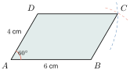
មើលដំណោះស្រាយ
ក. របៀបសង់ប្រលេឡូក្រាម \(\displaystyle ABCD\) ៖
- ប្រើបន្ទាត់ក្រិតគូសអង្កត់បាត \(\displaystyle AB = 6\text{ cm}\) ។
- នៅត្រង់ចំណុច \(\displaystyle A\) ប្រើរ៉ាប់ទ័រគូសមុំ \(\displaystyle \angle xAB = 60^\circ\) ។ នៅលើកន្លះបន្ទាត់ \(\displaystyle Ax\) ដៅចំណុច \(\displaystyle D\) ឱ្យបានប្រវែង \(\displaystyle AD = 4\text{ cm}\) ។
- ប្រើដែកឈានយកកាំស្មើ \(\displaystyle 6\text{ cm}\) (ស្មើ \(\displaystyle AB\)) គូសធ្នូរង្វង់ផ្ចិត \(\displaystyle D\) ។
- ប្រើដែកឈានយកកាំស្មើ \(\displaystyle 4\text{ cm}\) (ស្មើ \(\displaystyle AD\)) គូសធ្នូរង្វង់ផ្ចិត \(\displaystyle B\) កាត់ធ្នូទីមួយត្រង់ចំណុច \(\displaystyle C\) ។
- ភ្ជាប់ \(\displaystyle BC\) និង \(\displaystyle CD\) គេបានប្រលេឡូក្រាម \(\displaystyle ABCD\) ដែលត្រូវសង់ ។
ខ. របៀបសង់ប្រលេឡូក្រាម \(\displaystyle ABCD\) ៖
សង់ត្រីកោណ \(\displaystyle ABD\) ជាមុន ៖
- គូសអង្កត់បាត \(\displaystyle AD = 4\text{ cm}\) ។
- យកដែកឈានកាំ \(\displaystyle 2.5\text{ cm}\) គូសធ្នូរង្វង់ផ្ចិត \(\displaystyle A\) ។
- យកដែកឈានកាំ \(\displaystyle 3.5\text{ cm}\) គូសធ្នូរង្វង់ផ្ចិត \(\displaystyle D\) កាត់ធ្នូទីមួយត្រង់ចំណុច \(\displaystyle B\) ។
- ភ្ជាប់ \(\displaystyle AB\) និង \(\displaystyle BD\) គេបានត្រីកោណ \(\displaystyle ABD\) ។
កំណត់កំពូល \(\displaystyle C\) ៖
- យកដែកឈានកាំ \(\displaystyle 4\text{ cm}\) (ស្មើ \(\displaystyle AD\)) គូសធ្នូរង្វង់ផ្ចិត \(\displaystyle B\) ។
- យកដែកឈានកាំ \(\displaystyle 2.5\text{ cm}\) (ស្មើ \(\displaystyle AB\)) គូសធ្នូរង្វង់ផ្ចិត \(\displaystyle D\) កាត់ធ្នូខាងលើត្រង់ចំណុច \(\displaystyle C\) ។
- ភ្ជាប់ \(\displaystyle BC\) និង \(\displaystyle DC\) គេបានប្រលេឡូក្រាម \(\displaystyle ABCD\) ដែលត្រូវសង់ ។
គេមានប្រលេឡូក្រាម \(\displaystyle ABCD\) និងមាន \(\displaystyle O\) ជាផ្ចិត។ បន្ទាត់ \(\displaystyle d\) មួយកាត់តាម \(\displaystyle O\) កាត់ \(\displaystyle AB\) និង \(\displaystyle CD\) រៀងគ្នាត្រង់ \(\displaystyle A'\) និង \(\displaystyle C'\)។ បន្ទាត់ \(\displaystyle \Delta\) មួយទៀតកាត់តាម \(\displaystyle O\) កាត់ \(\displaystyle BC\) និង \(\displaystyle AD\) រៀងគ្នាត្រង់ \(\displaystyle B'\) និង \(\displaystyle D'\)។ បង្ហាញថាចតុកោណ \(\displaystyle A'B'C'D'\) ជាប្រលេឡូក្រាម។
មើលដំណោះស្រាយ
ក្នុងប្រលេឡូក្រាម \(\displaystyle ABCD\) ដែលមាន \(\displaystyle O\) ជាផ្ចិត (ចំណុចប្រសព្វនៃអង្កត់ទ្រូង) នោះ \(\displaystyle O\) ជាចំណុចកណ្ដាលនៃ \(\displaystyle AC\) និង \(\displaystyle BD\) (ផ្ចិតឆ្លុះនៃប្រលេឡូក្រាម) ៖
ពិនិត្យបន្ទាត់ \(\displaystyle d\) កាត់តាម \(\displaystyle O\) ៖ ដោយ \(\displaystyle AB \parallel CD\) នោះ \(\displaystyle \angle OA'A = \angle OC'C\) (មុំឆ្លាស់ក្នុង) និង \(\displaystyle \angle OAA' = \angle OCC'\) (មុំឆ្លាស់ក្នុង) ។ ដោយ \(\displaystyle OA = OC\) នាំឱ្យ \(\displaystyle \Delta OA'A \cong \Delta OC'C\) (តាម ម.ជ.ម) ។
វិបាក ៖ \(\displaystyle OA' = OC'\) នោះ \(\displaystyle O\) ជាចំណុចកណ្ដាលនៃអង្កត់ \(\displaystyle A'C'\) ។
ពិនិត្យបន្ទាត់ \(\displaystyle \Delta\) កាត់តាម \(\displaystyle O\) ៖ ដោយ \(\displaystyle AD \parallel BC\) តាមរបៀបដូចគ្នាគេបាន \(\displaystyle \Delta OD'A \cong \Delta OB'C\) (តាម ម.ជ.ម) ។
វិបាក ៖ \(\displaystyle OD' = OB'\) នោះ \(\displaystyle O\) ជាចំណុចកណ្ដាលនៃអង្កត់ \(\displaystyle B'D'\) ។
ក្នុងចតុកោណ \(\displaystyle A'B'C'D'\) មានអង្កត់ទ្រូងទាំងពីរគឺ \(\displaystyle A'C'\) និង \(\displaystyle B'D'\) ប្រសព្វគ្នាតង់ចំណុចកណ្ដាលរួម \(\displaystyle O\) (\(\displaystyle OA' = OC'\) និង \(\displaystyle OB' = OD'\)) ។
តាមលក្ខខណ្ឌសម្គាល់ ចតុកោណដែលមានអង្កត់ទ្រូងទាំងពីរកាត់គ្នាត្រង់ចំណុចកណ្ដាលរៀងៗខ្លួន ជាប្រលេឡូក្រាម ។
ដូចនេះ ចតុកោណ \(\displaystyle A'B'C'D'\) ជា ប្រលេឡូក្រាម ។
ត្រីកោណ \(\displaystyle ABC\) មាន \(\displaystyle E\) និង \(\displaystyle D\) ជាចំណុចកណ្ដាលនៃអង្កត់ \(\displaystyle AB\) និង \(\displaystyle AC\) រៀងគ្នា និង \(\displaystyle DE = 9x - 4\), \(\displaystyle BC = 6x + 4\)។ គណនាតម្លៃនៃ \(\displaystyle x\)។
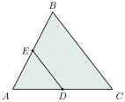
មើលដំណោះស្រាយ
ក្នុងត្រីកោណ \(\displaystyle ABC\) ដោយ \(\displaystyle E\) ជាចំណុចកណ្ដាលនៃ \(\displaystyle AB\) និង \(\displaystyle D\) ជាចំណុចកណ្ដាលនៃ \(\displaystyle AC\) នោះ \(\displaystyle ED\) ជាអង្កត់មធ្យមនៃត្រីកោណ \(\displaystyle ABC\) ។
តាមទ្រឹស្តីបទអង្កត់មធ្យមនៃត្រីកោណ ប្រវែងអង្កត់មធ្យមស្មើពាក់កណ្ដាលនៃជ្រុងទីបី ៖
\[ED = \frac{1}{2}BC \quad \text{ឬ} \quad 2ED = BC\]ជំនួសកន្សោមនៃ \(\displaystyle ED\) និង \(\displaystyle BC\) ចូល ៖
\[2(9x - 4) = 6x + 4\]\[18x - 8 = 6x + 4\]\[18x - 6x = 4 + 8\]\[12x = 12 \implies x = 1\]ផ្ទៀងផ្ទាត់ ៖ \(\displaystyle ED = 9(1) - 4 = 5\) និង \(\displaystyle BC = 6(1) + 4 = 10\) ឃើញថា \(\displaystyle 5 = \frac{10}{2}\) (ពិត) ។
ដូចនេះ តម្លៃនៃ \(\displaystyle x\) គឺ \(\displaystyle x = 1\) ។
គេមានចតុកោណកែង \(\displaystyle ABCE\) និងប្រលេឡូក្រាម \(\displaystyle BCDE\)។ បង្ហាញថា ត្រីកោណ \(\displaystyle ACD\) ជាត្រីកោណសមបាត។
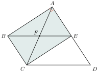
មើលដំណោះស្រាយ
ក្នុងចតុកោណកែង \(\displaystyle ABCE\) អង្កត់ទ្រូងទាំងពីរមានប្រវែងស្មើគ្នា ៖
\[AC = BE \quad (1)\]ក្នុងប្រលេឡូក្រាម \(\displaystyle BCDE\) ជ្រុងឈមមានប្រវែងស្មើគ្នា ៖
\[CD = BE \quad (2)\]
តាម \(\displaystyle (1)\) និង \(\displaystyle (2)\) ដោយអង្កត់ទាំងពីរស្មើនឹង \(\displaystyle BE\) ដូចគ្នា គេទាញបាន ៖
\[AC = CD\]ក្នុងត្រីកោណ \(\displaystyle ACD\) មានជ្រុងពីរស្មើគ្នា (\(\displaystyle AC = CD\)) ដូចនេះ ត្រីកោណ \(\displaystyle ACD\) ជា ត្រីកោណសមបាតកំពូល \(\displaystyle C\) ។
គេមានចតុកោណព្នាយ \(\displaystyle ABCD\) ដែល \(\displaystyle AB \parallel CD\) និង \(\displaystyle X\) និង \(\displaystyle Y\) ជាចំណុចកណ្ដាលនៃជ្រុងទ្រេត។
- ក. គណនា \(\displaystyle AB\) បើ \(\displaystyle XY = 12.6\) និង \(\displaystyle DC = 3\)។
- ខ. គណនាតម្លៃនៃ \(\displaystyle x\) បើ \(\displaystyle DC = 4x - 7\), \(\displaystyle XY = 2x + 11\), \(\displaystyle AB = 2x + 1\)។
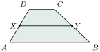
មើលដំណោះស្រាយ
ក្នុងចតុកោណព្នាយ \(\displaystyle ABCD\) (\(\displaystyle AB \parallel CD\)) ដោយ \(\displaystyle X\) និង \(\displaystyle Y\) ជាចំណុចកណ្ដាលនៃជ្រុងទ្រេត នោះ \(\displaystyle XY\) ជាបាតមធ្យមនៃចតុកោណព្នាយ ។
តាមទ្រឹស្តីបទបាតមធ្យមនៃចតុកោណព្នាយ ៖
\[XY = \frac{AB + CD}{2} \implies AB + CD = 2XY\]ក. គណនា \(\displaystyle AB\) ៖
ជំនួស \(\displaystyle XY = 12.6\) និង \(\displaystyle DC = 3\) ចូល ៖
\[AB + 3 = 2(12.6) = 25.2\]\[AB = 25.2 - 3 = 22.2\]ដូចនេះ \(\displaystyle AB = 22.2\) ។
ខ. គណនាតម្លៃនៃ \(\displaystyle x\) ៖
ជំនួសកន្សោម \(\displaystyle DC = 4x - 7\), \(\displaystyle AB = 2x + 1\) និង \(\displaystyle XY = 2x + 11\) ចូល ៖
\[(4x - 7) + (2x + 1) = 2(2x + 11)\]\[6x - 6 = 4x + 22\]\[6x - 4x = 22 + 6\]\[2x = 28 \implies x = \frac{28}{2} = 14\]ដូចនេះ តម្លៃនៃ \(\displaystyle x\) គឺ \(\displaystyle x = 14\) ។
គេមានចតុកោណព្នាយសមបាត \(\displaystyle ABCD\) ដែល \(\displaystyle BC \parallel AD\) និង \(\displaystyle \angle A = 67^\circ\)។ គណនារង្វាស់មុំផ្សេងទៀត។
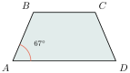
មើលដំណោះស្រាយ
ក្នុងចតុកោណព្នាយសមបាត \(\displaystyle ABCD\) ដែលមានបាត \(\displaystyle BC \parallel AD\) ៖
មុំបាតទាំងពីរនៅជាប់បាតធំ \(\displaystyle AD\) មានរង្វាស់ស្មើគ្នា ៖
\[\angle D = \angle A = 67^\circ\]មុំក្នុងរួមខាងរវាងបន្ទាត់ស្រប \(\displaystyle BC\) និង \(\displaystyle AD\) កាត់ដោយខ្នាត់ \(\displaystyle AB\) ជាមុំបន្ថែមគ្នា ៖
\[\angle A + \angle B = 180^\circ \implies \angle B = 180^\circ - 67^\circ = 113^\circ\]មុំបាតទាំងពីរនៅជាប់បាតតូច \(\displaystyle BC\) មានរង្វាស់ស្មើគ្នា ៖
\[\angle C = \angle B = 113^\circ\]
ដូចនេះ រង្វាស់មុំផ្សេងទៀតគឺ ៖
\[\angle D = 67^\circ, \quad \angle B = 113^\circ, \quad \angle C = 113^\circ \text{ ។}\]គេមាន \(\displaystyle ABCD\) ជាប្រលេឡូក្រាមដែល \(\displaystyle AD = CE\) និង \(\displaystyle \angle CDE = \angle CED\)។ បង្ហាញថា ចតុកោណ \(\displaystyle ABCD\) ជាចតុកោណស្មើ។
មើលដំណោះស្រាយ
ក្នុងត្រីកោណ \(\displaystyle CDE\) ដោយ \(\displaystyle \angle CDE = \angle CED\) នោះ \(\displaystyle \Delta CDE\) ជាត្រីកោណសមបាតកំពូល \(\displaystyle C\) នាំឱ្យ ៖
\[CD = CE \quad (1)\]តាមសម្មតិកម្ម គេមាន ៖
\[AD = CE \quad (2)\]តាម \(\displaystyle (1)\) និង \(\displaystyle (2)\) គេទាញបាន ៖
\[AD = CD\]ក្នុងប្រលេឡូក្រាម \(\displaystyle ABCD\) មានជ្រុងជាប់គ្នាពីរប៉ុនគ្នា (\(\displaystyle AD = CD\)) ។
តាមនិយមន័យ ប្រលេឡូក្រាមដែលមានជ្រុងជាប់គ្នាប៉ុនគ្នា ជាចតុកោណស្មើ ។
ដូចនេះ ចតុកោណ \(\displaystyle ABCD\) ជា ចតុកោណស្មើ ។
គេមាន \(\displaystyle ABCD\) ជាចតុកោណស្មើមាន \(\displaystyle BE \perp AD\) និងអង្កត់ \(\displaystyle DF \perp BC\)។ បង្ហាញថា \(\displaystyle BE = DF\)។
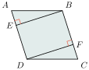
មើលដំណោះស្រាយ
ដោយ \(\displaystyle ABCD\) ជាចតុកោណស្មើ នោះគ្រប់ជ្រុងទាំងបួនមានប្រវែងស្មើគ្នា (\(\displaystyle AB = BC = CD = DA\)) និងមុំឈមប៉ុនគ្នា (\(\displaystyle \angle A = \angle C\)) ។
ក្នុងត្រីកោណកែង \(\displaystyle ABE\) (\(\displaystyle BE \perp AD\) ត្រង់ \(\displaystyle E\)) និងត្រីកោណកែង \(\displaystyle CDF\) (\(\displaystyle DF \perp BC\) ត្រង់ \(\displaystyle F\)) មាន ៖
- អ៊ីប៉ូតេនុស \(\displaystyle AB = CD\) (ជ្រុងនៃចតុកោណស្មើ)
- មុំស្រួច \(\displaystyle \angle BAE = \angle DCF\) (មុំឈមនៃចតុកោណស្មើ \(\displaystyle \angle A = \angle C\))
- \(\displaystyle \angle AEB = \angle CFD = 90^\circ\)
ដូចនេះ \(\displaystyle \Delta ABE \cong \Delta CDF\) (តាមលក្ខខណ្ឌ អ.ម នៃត្រីកោណកែង) ។
វិបាក ៖ ជ្រុងមុំកែងត្រូវគ្នាប៉ុនគ្នា នាំឱ្យ ៖
\[BE = DF \text{ ។}\](ឬតាមរូបមន្តផ្ទៃក្រឡាចតុកោណស្មើ ៖ \(\displaystyle S = AD \times BE = BC \times DF\) ដោយ \(\displaystyle AD = BC\) នាំឱ្យ \(\displaystyle BE = DF\)) ។
គេមាន \(\displaystyle ABCD\) ចតុកោណស្មើ។ បង្ហាញថា \(\displaystyle \angle ODC\), \(\displaystyle \angle OCD\) ជាមុំបំពេញគ្នា។
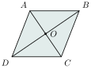
មើលដំណោះស្រាយ
ក្នុងចតុកោណស្មើ \(\displaystyle ABCD\) អង្កត់ទ្រូងទាំងពីរ \(\displaystyle AC\) និង \(\displaystyle BD\) ប្រសព្វគ្នាតង់ \(\displaystyle O\) ។
តាមលក្ខណៈគ្រឹះនៃចតុកោណស្មើ អង្កត់ទ្រូងទាំងពីរកែងគ្នាត្រង់ចំណុចប្រសព្វ ៖
\[AC \perp BD \quad \text{ត្រង់ } O\]នាំឱ្យ \(\displaystyle \angle COD = 90^\circ\) ។
ក្នុងត្រីកោណកែង \(\displaystyle OCD\) (កែងត្រង់ \(\displaystyle O\)) ផលបូកមុំស្រួចទាំងពីរស្មើនឹង \(\displaystyle 90^\circ\) ៖
\[\angle ODC + \angle OCD = 90^\circ\]តាមនិយមន័យ មុំពីរដែលមានផលបូករង្វាស់ស្មើនឹង \(\displaystyle 90^\circ\) ហៅថាមុំបំពេញគ្នា ។
ដូចនេះ មុំ \(\displaystyle \angle ODC\) និង \(\displaystyle \angle OCD\) ជា មុំបំពេញគ្នា ។
ខ្លឹមសារ៖ សៀវភៅពុម្ពគណិតវិទ្យាថ្នាក់ទី៨ របស់ក្រសួងអប់រំ យុវជន និងកីឡា · វាយអត្ថបទ គូររូបភាពឡើងវិញ និងរៀបចំលើអនឡាញដោយលោកគ្រូ សាន សុខលី សម្រាប់ការសិក្សាដោយឥតគិតថ្លៃ និងមិនរកប្រាក់ចំណេញ។ មិនមែនជាការបោះពុម្ពផ្លូវការរបស់ក្រសួងទេ។